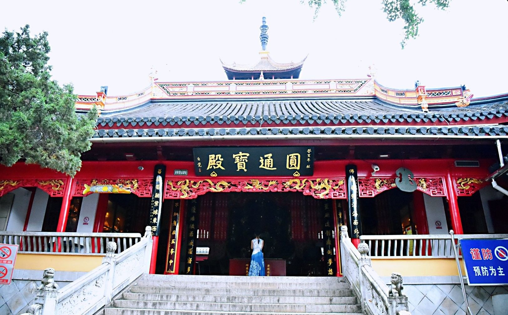
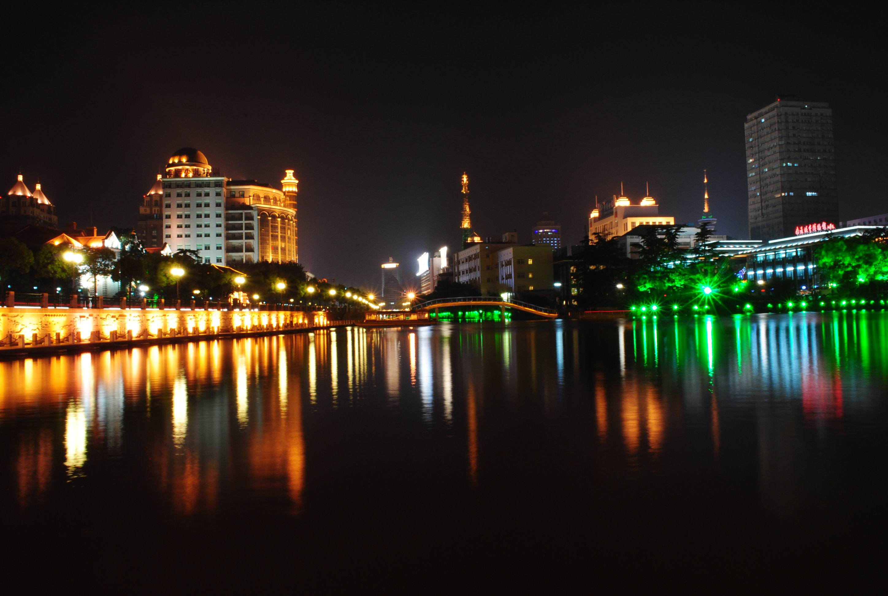

风景
狼山坐邻长江，是南通著名的景点之一。山上树木葱郁、古迹众多，主要景点有千年古刹广教寺、骆宾王墓、三仙祠、支云塔等，登上山巅可俯瞰长江，风光极佳。狼山是中国的佛教名山，这里的佛教建筑遍布全山，是礼佛祈福的胜地。狼山景区主入口位于东面的城山路上，上山有索道，
但不建议乘坐，因为景区不大山也不高，步行上下山也只需约两个小时便可游完。狼山山道沿路有许多历史名人的墓葬，如唐代著名诗人骆宾王墓等等。继续前行便是广教寺，供奉着大势至菩萨像，两侧为十六尊者的佛像。
山上的大观台如今是较佳的观景胜地，这里视野开阔，可以让你一览无余地欣赏长江美景。此外，狼山景区西面紧邻南通园艺博览园，游完狼山可以去看看。狼山周边另有马鞍山、黄泥山、剑山、军山，与狼山通称“五山”，同样值得一游。
南通“筑城即有河”，这条河就是环抱老城区的古护城河——濠河。一座城市有了水就有了灵气，南通有了濠河，便有了一份豪迈，有了一丝细腻。
濠河，是现在国内仅存的四条古护城河之一，千余年来环绕南通老城区，水流清澈，迂回激荡，形如葫芦，宛如珠链，被誉为南通城的“翡翠项链”。
